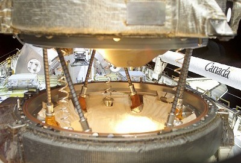
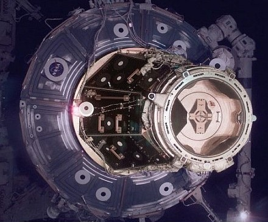
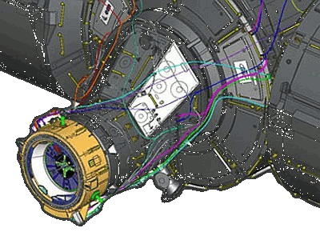
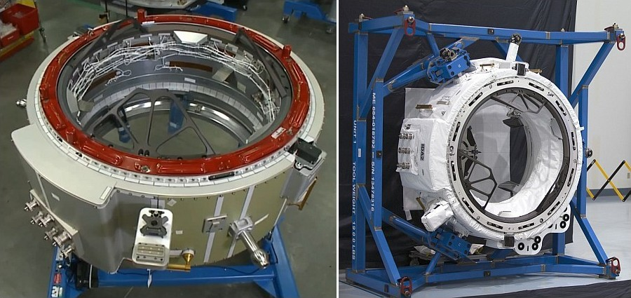
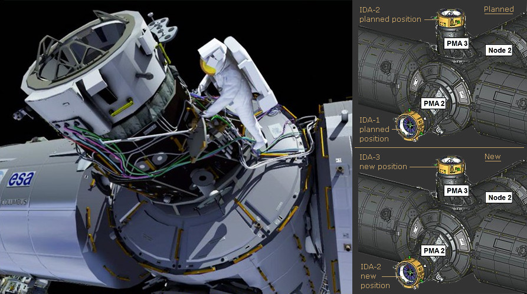

pressurised mating adapters [pmas] and international docking adapters [idas]
PMA-1 connects Node 1. to Zarya. PMA-2/IDA-2 docks spacecraft to Node 2 forward port. PMA-3/IDA-3 docks spacecraft to Node 2. zenith (top) port.
Introduction
Pressurised Mating Adapters
The U.S. Segment is the forward section of the station including the U.S. Node 1. (Unity). The components in this Segment have U.S. standard berthing ports and an airlock suitable for U.S and Russian space suits. The Russian and U.S. Segments are connected by the U.S. Pressurised Mating Adapters 1. [PMA-1].
Two other PMAs, PMA-2 and PMA-3, were used to dock the U.S. Space Shuttle to the U.S. Segment of the station.
International Docking Adapters
After the retirement of the Space Shuttle, PMA-2 and 3 were fitted with International Docking Adapters [IDAs]. These were built to an international standard so that other spacecraft could be made to dock with the station.
Details of the PMAs and IDAs are given in the following sections.
There are three Pressurized Mating Adapters (PMAs) on the Station which provide the following critical functions:
PMA-1
Permanently connects the habitat modules of the Russian segment to the U.S. segment and allows pressurised access between them. It connects the forward berthing port of the Russian Zarya module to the rear berthing port of the U.S. Node 1. (Unity).
PMA-1 was delivered to the Station attached to Unity's rear port on mission 2A (STS-88).
PMA-2
Used for temporary docking and crew access of the U.S. Space Shuttle to the Station. Originally delivered attached to the forward port of Unity on mission 2A (STS-88). Later it was moved to the forward port of the Destiny Laboratory after the lab's installation.
PMA-2 was later moved to the forward port of Node 2., Harmony, after harmony was installed on mission 10A (STS-120).
PMA-3
Used for temporary docking and crew access of the U.S. Space Shuttle to the Station. Originally delivered to the Station on mission 3A (STS-92), and attached to unity's nadir port.
PMA-3 was later moved to the upward facing (top) port of Node 2., Harmony, after harmony was installed on mission 10A (STS-120).
Common Berthing Mechanisms (CBM)
Ports on the U.S. habitat modules and nodes are fitted with "Common Berthing Mechanisms" (CBMs) while Russian and Space Shuttle docking ports have an inter locking system termed an Androgynous Peripheral Attach System (APAS). A CBM is not compatible with an APAS, therefore a PMA is needed to allow the two systems to be connected.
The PMA has an offset conical shape with the larger CBM on one end and an APAS on the other. PMAs are pressurized, heated and supplied with hand-hold grips so that "shirt-sleeved" crews can pass through them.
Common Berthing Mechanisms (CBMs) are used in all U.S. habitat modules to enable on-orbit mating and airtight seals between them. The system is comprised of two mating structures: the active half on the Station and the passive half used on arriving structures.
The active CBM (ACBM) contains all of the powered components and associated alignment hardware for berthing. The passive CBM (PCBM) configurations include the reciprocal mating fittings and alignment components, inclusive of the atmospheric seal. In a precisely controlled sequence of events, the Station remote manipulation system positions the mating module passive CBM near the Station active CBM for the automated berthing, resulting in a structurally sealed assembly.
When a PMA is first installed, or moved, the PCBM on its larger end, allows the ACBM on the Station berthing port to capture it and lock it into place.
Androgynous Peripheral Attach System (APAS)
The Androgynous Peripheral Attach System, (APAS) consists of a structural ring, a movable ring, alignment guides, latches, hooks, dampers and fixers. It mates with an exact copy, and each can act as the passive or active half. During docking, the active half's capture ring extends outward from the structural ring toward the passive half. Upon contact, the system dampens out any relative motion between the docking vehicles. Once that is accomplished, the capture ring aligns the two vehicles. It is then retracted with the passive ring still attached. Twenty-four structural hooks snug the connection down to form an airtight seal.

PMA being captured by Space Shuttle using APAS
{Credit: NASA Image s105e5067.jpg}
When a Shuttle is captured by the attach system its steering jets are de-activated and ground controllers will command off the Station's steering jets to reduce the forces acting at the docking interface. The shock absorber-type springs in the docking mechanism will dampen any relative motion between the shuttle and the Station.
Once relative motion between the spacecraft has been stopped, the shuttle commands the docking ring on its mechanism to retract and close latches in the mechanism to firmly secure the shuttle to the Station. The shuttle's steering jets are then reactivated to control both it and the Station for the duration of the docked operations.
When the Shuttle is ready to un-dock, the initial separation is performed by springs in the docking mechanism that gently push the shuttle away from the Station. Both the Shuttle and the Station's steering jets are shut off to avoid any inadvertent firings during this period. Once the docking mechanism's springs have pushed the Shuttle away to a distance of about two feet the shuttle's steering jets are turned back on and fired to begin very slowly moving away.
The Androgynous Peripheral Attach System's technological roots reach back to the Apollo-Soyuz and Shuttle-Mir missions. The System is built by Moscow-based RSC-Energia.
Extravehicular Activity (EVA) Support
The PMA is equipped with the following space walk aids:
Portable foot restraint (PFR) - Top-mounted work site interface fixture (WIF)The PFR WIF fixtures are used to attach the PFR workstation stanch ions.
Flight-releasable grapple fixtures (FRGFs) [2] - Provide the standard mechanical interface between the shuttle's robotic arm and pay loads. They are also compatible with all large station manipulator systems. They can be released during an EVA by rotating two release rods that allow the fixture's grapple shaft to be removed. A spare shaft can be installed on orbit, enabling the interface to be restored to a capture configuration for retrieving pay loads.
Camera and laser targets - Consist of a camera target on the APAS hatch, a hemispherical laser target on the PMA, and planar laser reflectors on the side of the APAS.
Space Vision System (SVS) - Targets
Hand holds and hand rails - Help EVA crew members move about. They have been placed in pre-planned paths in and around work sites.
The PMA is a truncated conical shell with a 24-inch axial offset in the diameters between the end rings. It is a ring-stiffened shell structure machined from 2219 aluminum alloy roll ring forgings welded together. PMA mechanical interfaces include a passive common berthing mechanism (PCBM) and a Russian Androgynous Peripheral Attach System (APAS).
Thermal Control System
The PMA has ten 60-watt passive thermal control system heaters, temperature instrumentation, and multi layer insulation (MLI). The shell temperature is maintained above the minimum level by electrical resistance heater circuits. The ground or crew can control the shell heater states by altering the set points of the heaters. Radiative heat loss and excessive radiative heating from the space environment are minimized by MLI blankets between a micro meteorite/orbital debris shield and the PMA's primary structure.
Command and Data Handling
PMA-2 and 3 provide a hard-line 1553 data bus connection between the orbiter and station via X-connectors on the PMA's androgynous peripheral attachment system (APAS), which interfaces with the orbiter docking system (ODS). Umbilical connections between the Station and PMA complete this hard-line path which allows the orbiter interface units (OIUs) and orbiter portable computer system machines to talk on the Station orbiter buses.
Motion Control System
PMA-2 and 3 have two sets of four red light-emitting diodes (LEDs) that tell the shuttle crew the status of the Station attitude control system. The crew can see the LEDs through the overhead window on the aft flight deck.
Each set of four LEDs is controlled by a separate station MDM for one-fault tolerance during arrival or departure. Free drift is indicated when the two sets of LEDs alternately flash on and off at a 5-hertz rate. Every other state of the MCS is indicated by a steady on.
Specifications

PMA-2 attached to the front of the Destiny laboratory
PMA general specifications: Length - 1.86 m (6.1 ft) Width, wide end - 1.9 m (6.25 ft) Width, narrow end - 1.37 m (4.5 ft) Mass, PMA-1 - 1,589 kg (3,504 lb) Mass, PMA-2 - 1,376 kg (3,033 lb) Mass, PMA-3 - 1,183 kg (2,607 lb)
International Docking Adapters [IDAs]
There are currently two ports for docking spacecraft to the U.S. Segment of the station. These use the Androgynous Peripheral Attach System, version 95 (APAS-95) on the outer ends of the Pressurized Mating Adapters [PMA-2 and 3]. These PMAs are both attached to Node 2. (Harmony).
The International Docking Adapter [IDA] is a spacecraft docking system adapter used to convert APAS-95 to the NASA Docking System (NDS) which is designed to the International Docking System Standard (IDSS).
The IDAs are placed on the open ends of PMA-2 and 3 and allow the transfer of crew, cargo, power and data between the docked spacecraft and the station.
Boeing's CST-100 Starliner and SpaceX's Crew Dragon spacecraft will dock at the adapters in the near future when bringing astronauts to the station as part of NASA's Commercial Crew Program.
Androgynous Peripheral Attach System (APAS)
Unlike previous docking systems, any APAS docking ring can mate with any other APAS docking ring. Each APAS has an active and a passive side, but both sides can fulfill either role.
For docking, the spade-shaped guides of the extended active unit and the retracted passive unit interacted for gross alignment. The ring holding the guides on the active unit latches with the passive unit catches. After these are caught shock absorbers in the U.S. unit and mechanical attenuators on the Soviet side dissipate impact energy. The active unit then retracts to bring the docking collars together and guides and sockets completed alignment. For un-docking four spring push rods drive the spacecraft apart.
APAS has three basic variations; APAS-75, 89 and 95.
APAS-75: This APAS was co-developed by U.S. and Soviet engineers to be used on a U.S. mission to a Salyut space station. It was used instead on the Apollo-Soyuz Test Project (ASTP). The U.S. and Soviet version were mechanically compatible despite some differences in their design.
APAS-89: When the USSR started working on Mir they were also working on the Buran shuttle program. The APAS-75 design was heavily modified to APAS-89 for docking Buran with the Mir space station. The Buran shuttle was canceled in 1994 and never flew to Mir, but Mir's Kristall module was out fitted with two APAS-89 docking mechanisms.
APAS-95: APAS was selected for the Shuttle-Mir program and manufactured by Russian RKK Energia. The U.S. Rockwell International integrated it onto shuttles' Orbiter Docking System (ODS). APAS-95, basically the same as APAS-89, was selected to join the American and Russia modules on the ISS and for docking the U.S. Space Shuttle. The active capture ring that extends outward from the orbiter captures the passive mating ring on the station's Pressurized Mating Adapters [PMAs]. The capture ring aligns them, pulls them together and deploys 12 structural hooks, latching the two systems with an airtight seal. The PMAs are permanently passive.
International Docking System Standard (IDSS)
The IDAs are built to the International Docking System Standard (IDSS), which features built-in systems for automated docking and uniform measurements.

IDA Docking Ring (yellow) attached to PMA-2
That means any destination or any spacecraft can use the adapters in the future, including the new commercial spacecraft to other international spacecraft yet to be designed.
The adapters also include fittings so power and data can be transferred from the station to the visiting spacecraft.
The systems and targets for the IDA are much more sophisticated than previous docking systems and include lasers and sensors that allow the station and spacecraft to communicate digitally. Distance cues then enable automatic alignment and connection.
The work by private companies to take on low-Earth orbit missions is expected to free up NASA's resources for future missions into deep space.
Construction
Both U.S. and international teams worked together to construct the IDAs. The U.S. Boeing company is the primary contractor for the IDAs which were assembled at their Houston Product Support Center.
Parts from sub-contractors came from 25 U.S. states. The primary structure was built by the Russian company RSC Energia.

IDA-2 in factory (with micro-meteorite cover (right))
Specifications
Mass: 526 kg Height: 110 cm Diameter (Basic): 160 cm Diameter (overall): 240 cm (Includes docking targets and outer systems).
Installation
The IDAs are delivered to the station by the U.S. commercial company SpaceX using their Dragon spacecraft. On Dragon's arrival at the station, the station's robotic arm removes the IDA from Dragon's trunk and moves it to about 30 cm (1 ft) from the front of the PMA. It then moves the IDA carefully into position until it is seated on the PMA and holds it there. Astronauts, during a space walk, manually complete the electrical connections and permanently connect it to the PMA. The first space walks to prepare the station for the addition of the IDAs took place in early 2015.
IDA-1 was lost during the launch failure of SpaceX CRS-7 mission on June 28, 2015.
IDA-2 was launched on SpaceX CRS-9 mission on 18 July 2016. On 19 August 2016 a space walking crew attached it to PMA-2 which is berthed to the front port of Node 2. (Harmony). This was the original position planned for IDA-1.
IDA-3 was launched on SpaceX CRS-18 mission on 25 July 2019. On 21 August 2019 a space walking crew attached it to PMA-3 which is berthed to the zenith (top) port of Node 2. (Harmony). IDA-3 was built mostly from spare parts to speed construction.

IDA-2 Installation Drawings - Spacewalk (left), Change of location after IDA-1 loss (right)